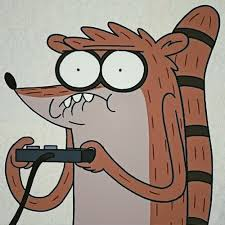
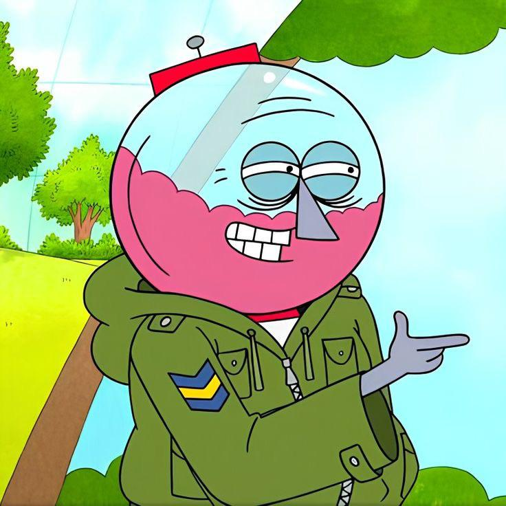
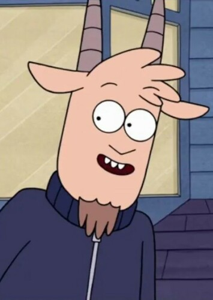
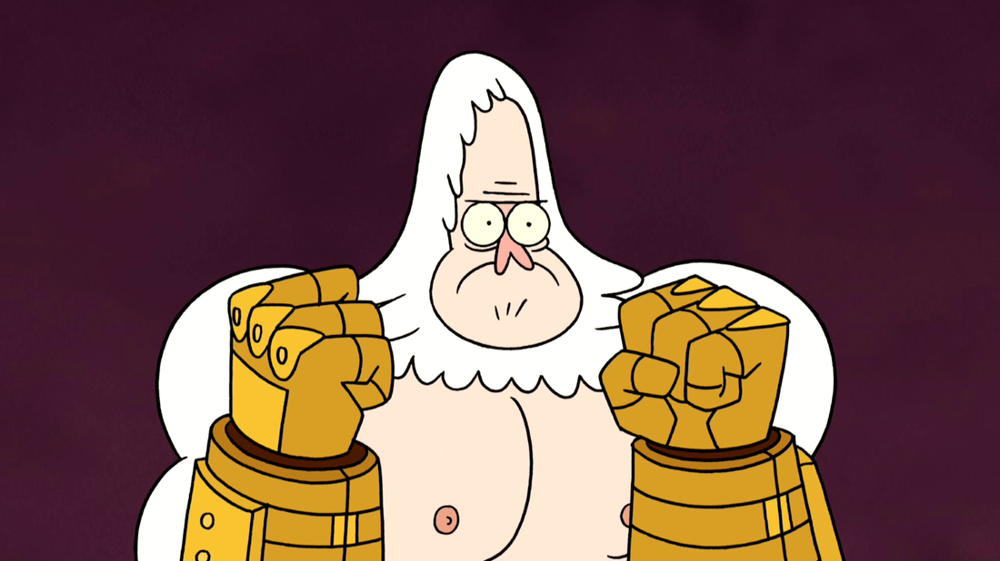

Mordecai, a tall blue jay from Regular Show, is a laid-back, artistic, and sometimes awkward character. He works as a groundskeeper at the park alongside his best friend, Rigby. Known for his love of video games, music, and slacking off, Mordecai often navigates life’s challenges with humor and heart.Muscle Man, a green, stocky park groundskeeper in Regular Show, is loud, crude, and known for his “My mom!” jokes. Despite his obnoxious humor and unpredictable antics, he’s deeply loyal to his friends. Muscle Man’s wild personality and surprising moments of sincerity make him a standout character..

Rigby, a hyperactive raccoon from *Regular Show*, is mischievous, impulsive, and often immature. As Mordecai’s best friend and fellow park groundskeeper, he loves video games, pranks, and slacking off. Though his reckless behavior causes chaos,

Benson is the strict, no-nonsense manager of the park in *Regular Show*. He’s a gumball machine with a temper, often frustrated by the antics of Mordecai and Rigby. Despite his tough exterior, Benson cares deeply about the park and his coworkers, constantly trying to keep order amidst the chaos.

Thomas is a character from *Regular Show* who works at the park as a friend and occasional coworker of Mordecai and Rigby. He’s known for his laid-back, goofy personality and strong sense of loyalty. While not as prominent as some characters, Thomas adds humor and charm to the show.

Skips is a wise and powerful yeti from *Regular Show*. As the park's groundskeeper, he's known for his strength and immortality. With centuries of experience, he often serves as the voice of reason, helping Mordecai and Rigby navigate the chaotic situations they encounter while maintaining a calm demeanor.